# 安装包
if (!requireNamespace("RIdeogram", quietly = TRUE)) {
install.packages("RIdeogram")
}
# 加载包
library(RIdeogram)染色体图
染色体图（Ideogram）是一种用于可视化染色体结构和染色体上各类基因组特征的图形工具。它通常以每条染色体为单位，按比例绘制出染色体的长度和着丝粒等结构，并可在染色体上标注基因密度、遗传变异、表达水平、重复序列、功能标记等多种信息。
染色体图的形态可以是直线型或环状型（如Circos图）。其中，直线型染色体图更适合展示染色体的线性结构与局部数据变化，特别适用于基因组扫描、群体比较、遗传图谱等研究。而其可视化效果不仅便于直观理解染色体上数据的分布，还可以叠加多层信息如热图、标记符号、折线、色块等。
示例

图片利用 RIdeogram 包内置拟南芥属物种（Liriodendron）数据绘制的带有双折线标签的染色体图。每条染色体以比例绘制，中心的颜色表示基因组热图数据（此处为 Fst 值，反映群体分化程度），两侧的上下折线分别代表两个群体（CE 和 CW）在不同染色体区域上的 Pi 值（核苷酸多态性）。
环境配置
系统: 跨平台（Linux/MacOS/Windows）
编程语言: R
依赖包:
RIdeogram
数据准备
使用RIDeogram包的内置数据。
data(human_karyotype, package="RIdeogram")
data(gene_density, package="RIdeogram")
data(Random_RNAs_500, package="RIdeogram")可以通过 head() 函数查看各数据的基本格式：
head(human_karyotype) Chr Start End CE_start CE_end
1 1 0 248956422 122026459 124932724
2 2 0 242193529 92188145 94090557
3 3 0 198295559 90772458 93655574
4 4 0 190214555 49712061 51743951
5 5 0 181538259 46485900 50059807
6 6 0 170805979 58553888 59829934human_karyotype核型数据包含五列，第1列是染色体ID，第2列和第3列是染色体起始和终止位置，第4列和第5列是着丝粒的起始和终止位置。注：若无着丝粒信息，仅保留前三列即可。
head(gene_density) Chr Start End Value
1 1 1 1000000 65
2 1 1000001 2000000 76
3 1 2000001 3000000 35
4 1 3000001 4000000 30
5 1 4000001 5000000 10
6 1 5000001 6000000 10gene_density数据用于绘制热图，包含染色体ID、起始和终止位置，第4列是数值（如基因数目、SNP密度等），用于染色体上的热度映射。
head(Random_RNAs_500) Type Shape Chr Start End color
1 tRNA circle 6 69204486 69204568 6a3d9a
2 rRNA box 3 68882967 68883091 33a02c
3 rRNA box 5 55777469 55777587 33a02c
4 rRNA box 21 25202207 25202315 33a02c
5 miRNA triangle 1 86357632 86357687 ff7f00
6 miRNA triangle 11 74399237 74399333 ff7f00Random_RNAs_500数据为标签信息（track），共六列包含：标签类型（如tRNA, rRNA, miRNA等），形状（可选：circle、box 或 triangle），染色体、起始、终止位置，标签颜色。
可视化
1. 基础染色体图
运行后可以在工作目录中找到一个 SVG 文件和一个 PNG 文件。
# 基础染色体图
ideogram(karyotype = human_karyotype)
convertSVG("chromosome.svg", device = "png")
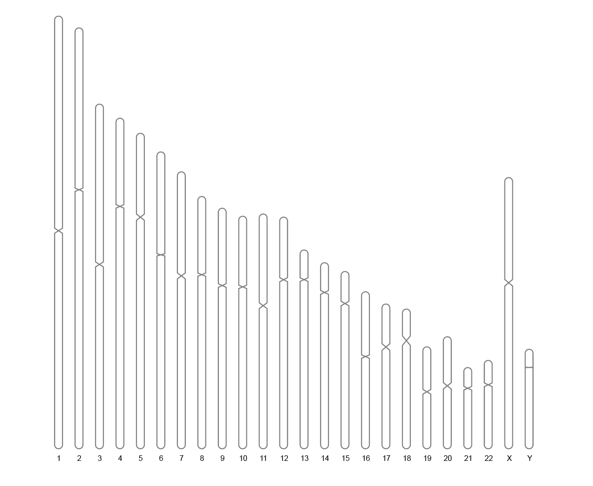
2. 包含热图的染色体图
使用overlaid参数将全基因组数据映射到染色体图谱上，将整个人类基因组的基因密度可视化。
# 包含热图的染色体图
ideogram(karyotype = human_karyotype, overlaid = gene_density)
convertSVG("chromosome.svg", device = "png")
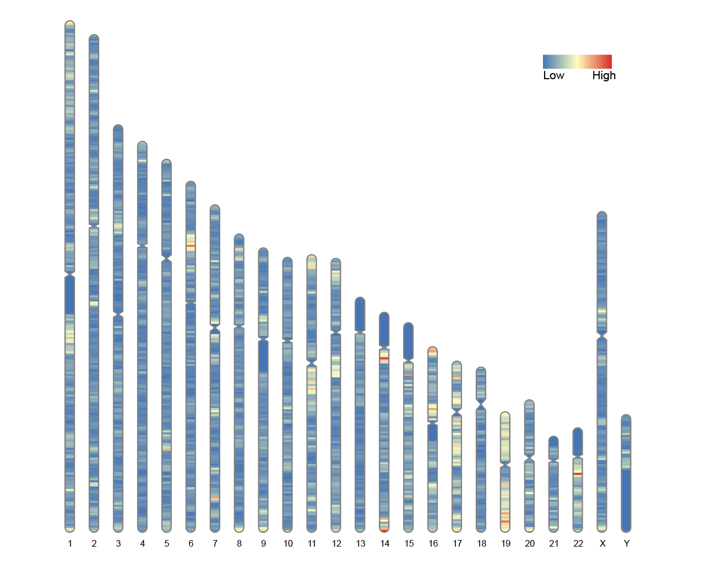
3. 轨迹标签
将一些全基因组范围的数据以轨道的形式映射在染色体图的侧边。
# 轨迹标签
ideogram(karyotype = human_karyotype, label = Random_RNAs_500, label_type = "marker")
convertSVG("chromosome.svg", device = "png")
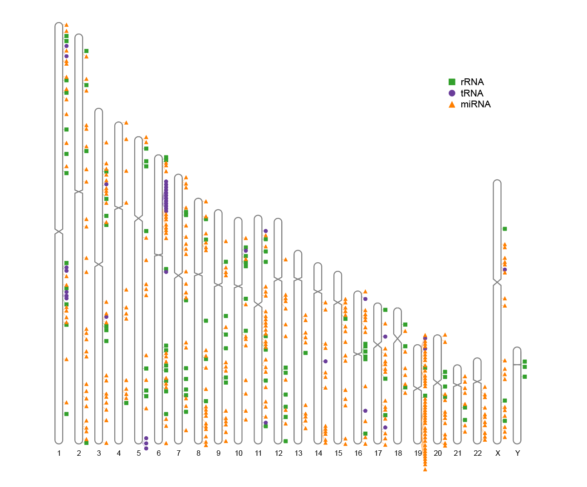
4. 同时绘制热图与轨迹标签
同时映射叠加的热图和染色体表象上的轨道标签。
# 同时绘制热图与轨迹标签
ideogram(karyotype = human_karyotype, overlaid = gene_density, label = Random_RNAs_500, label_type = "marker")
convertSVG("chromosome.svg", device = "png")
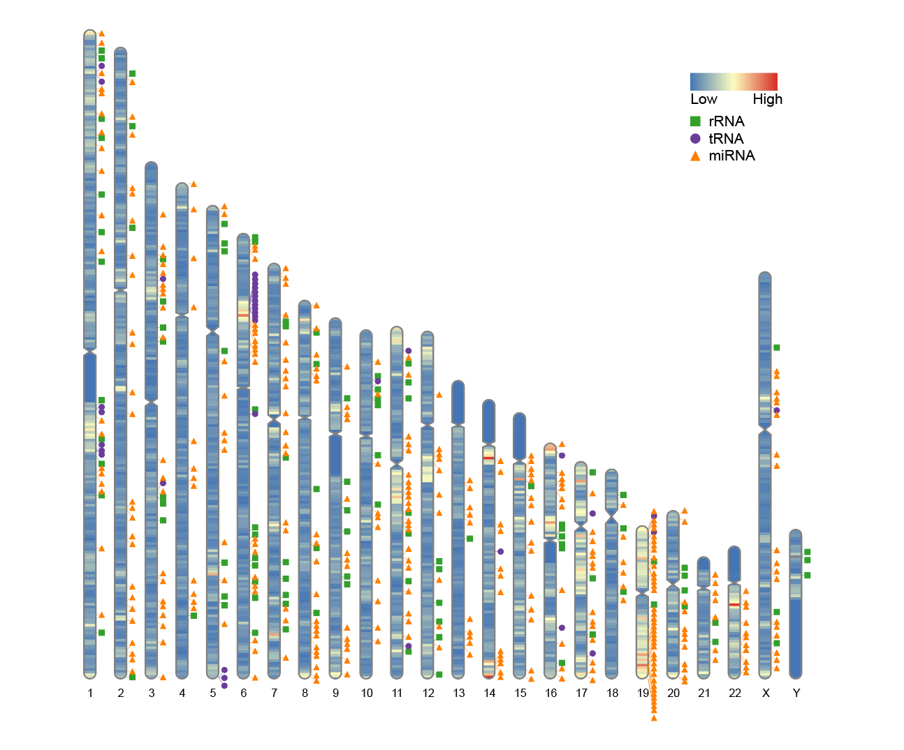
5. 自定义热图颜色
如果要更改热图的颜色，可以修改参数 colorset1（默认值为 colorset1 = c("#4575b4", "#ffffbf", "#d73027")）。修改颜色可以使用内置的颜色名称，也可以使用 colors()，或采用 "#rrggbb" 或 "#rrggbbaa" 格式的十六进制颜色代码。
# 自定义热图颜色
ideogram(karyotype = human_karyotype, overlaid = gene_density, label = Random_RNAs_500, label_type = "marker", colorset1 = c("#fc8d59", "#ffffbf", "#91bfdb"))
convertSVG("chromosome.svg", device = "png")
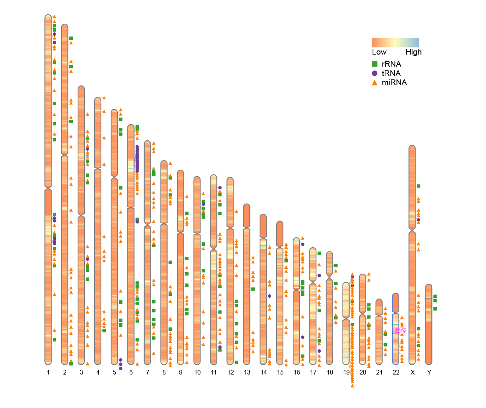
6. 不含着丝粒信息的染色体图
如果研究的物种没有明确的着丝粒位置信息，也可以绘制染色体图。在这种情况下，karyotype（核型）文件中只需包含三列：染色体编号、起始位置和终止位置，而不需要第四、第五列的着丝粒起止坐标。
为了模拟这种情况，可以将 RIdeogram 自带的 human_karyotype 数据框中的后两列删除：
# 不含着丝粒信息的染色体图
human_karyotype <- human_karyotype[,1:3]
ideogram(karyotype = human_karyotype, overlaid = gene_density, label = Random_RNAs_500, label_type = "marker")
convertSVG("chromosome.svg", device = "png")即使缺少着丝粒信息，RIdeogram 仍然可以绘图，只是图中不会标出着丝粒区域。
7. 仅使用部分染色体时的宽度设置
在一些情况下，例如只分析物种的部分染色体（如前10条），默认的图宽可能会显得过于分散或留白较多。此时建议通过调整 width 参数来优化图像布局。
为模拟这种情况，可以从 human_karyotype 数据中保留前10条染色体，并比较在默认宽度和调整后的宽度下绘图的效果：
修改前：
# 修改前
human_karyotype <- human_karyotype[1:10,]
ideogram(karyotype = human_karyotype, overlaid = gene_density, label = Random_RNAs_500, label_type = "marker")
convertSVG("chromosome.svg", device = "png")
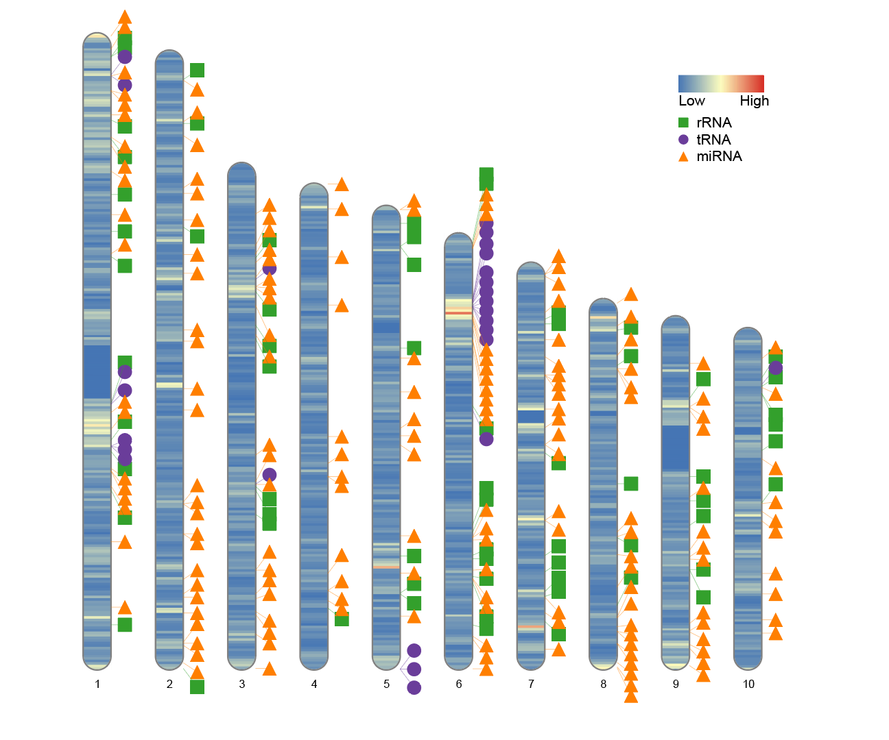
修改后：
# 修改后
human_karyotype <- human_karyotype[1:10,]
ideogram(karyotype = human_karyotype, overlaid = gene_density, label = Random_RNAs_500, label_type = "marker", width = 100)
convertSVG("chromosome.svg", device = "png")
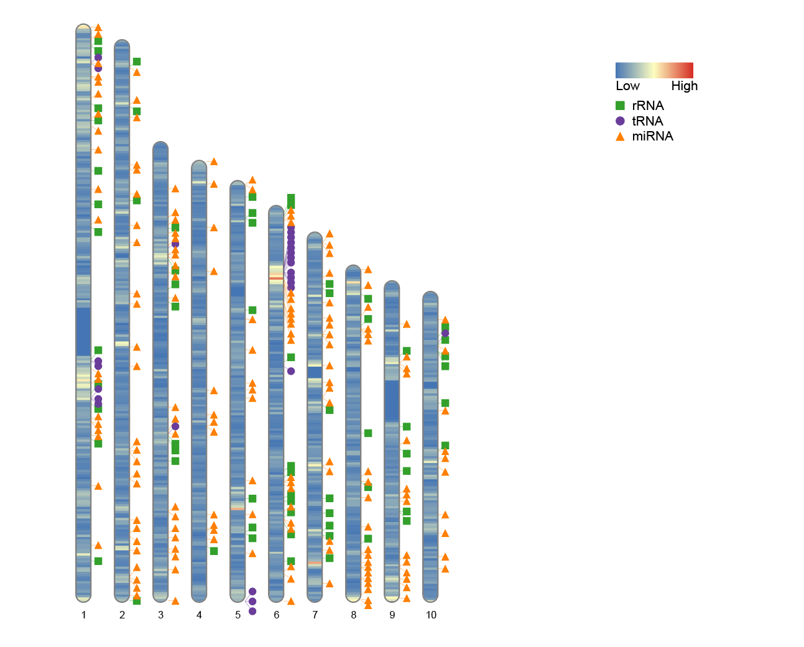
8. 调整图例位置
如果希望移动图例的位置，可以通过修改参数 Lx 和 Ly 来实现。这两个参数分别控制图例左上角相对于图像边缘的位置，默认值分别为 Lx = 160 和 Ly = 35。
-
Lx：图例左上角距离图像左边的距离。 -
Ly：图例左上角距离图像上边的距离。
通过调整这两个参数，可以避免图例与图像主体重叠，或根据排版需求将其放置在更合适的位置。
# 调整图例位置
ideogram(karyotype = human_karyotype, overlaid = gene_density, label = Random_RNAs_500, label_type = "marker", width = 100, Lx = 80, Ly = 25)
convertSVG("chromosome.svg", device = "png")
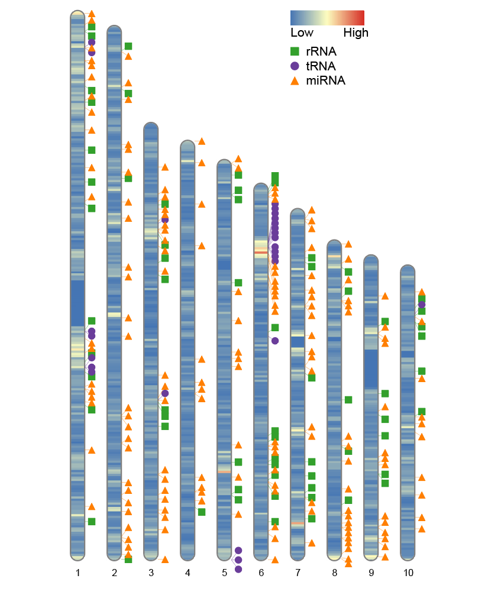
9. 不同标签类型
RIdeogram 支持多种标签类型，可以根据可视化需求选择不同的方式展示数据。目前支持的标签类型包括：
-
"marker"（标记点） -
"heatmap"（热图） -
"line"（折线） -
"polygon"（多边形）
9.1 热图标签
# 热图标签
data(human_karyotype, package="RIdeogram")
ideogram(karyotype = human_karyotype, overlaid = gene_density, label = LTR_density, label_type = "heatmap", colorset1 = c("#f7f7f7", "#e34a33"), colorset2 = c("#f7f7f7", "#2c7fb8"))
convertSVG("chromosome.svg", device = "png")
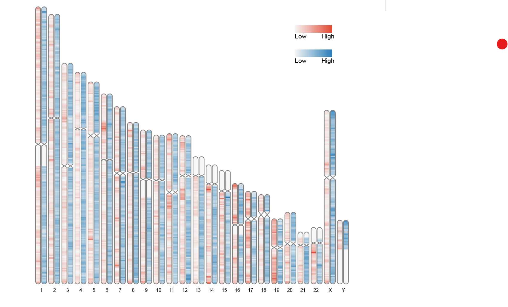
该图使用RIdeogram内置的人类染色体数据，展示了两个特征（基因密度和LTR元件密度）在染色体上的分布情况。不同颜色深浅表示不同数值区间，有助于观察基因组中各区域的密度差异。
9.2 单条折线标签
# 单条折线标签
data(liriodendron_karyotype, package="RIdeogram")
data(Fst_between_CE_and_CW, package="RIdeogram")
data(Pi_for_CE, package="RIdeogram")
ideogram(karyotype = liriodendron_karyotype, overlaid = Fst_between_CE_and_CW, label = Pi_for_CE, label_type = "line", colorset1 = c("#e5f5f9", "#99d8c9", "#2ca25f"))
convertSVG("chromosome.svg", device = "png")
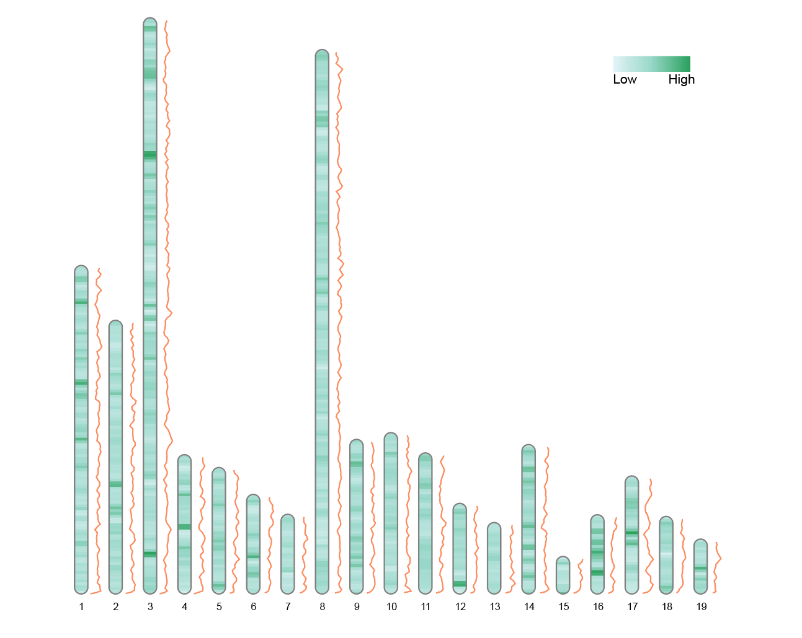
该图展示了单个指标（Pi值）在染色体上的连续变化趋势，通过折线的起伏可直观反映基因多样性在不同区段的分布模式。
9.3 双条折线标签
# 双条折线标签
data(liriodendron_karyotype, package="RIdeogram")
data(Fst_between_CE_and_CW, package="RIdeogram")
data(Pi_for_CE_and_CW, package="RIdeogram")
ideogram(karyotype = liriodendron_karyotype, overlaid = Fst_between_CE_and_CW, label = Pi_for_CE_and_CW, label_type = "line", colorset1 = c("#e5f5f9", "#99d8c9", "#2ca25f"))
convertSVG("chromosome.svg", device = "png")
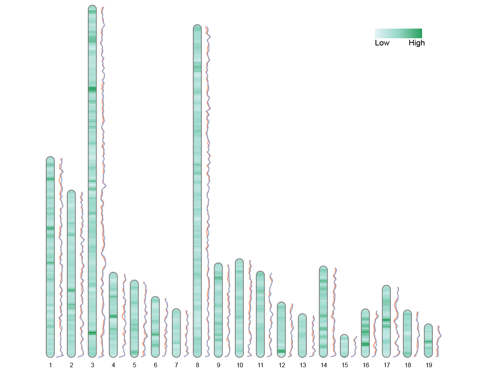
该图展示了两个群体（CE和CW）在染色体上的Pi值对比，双线并列描绘有助于发现两者在某些染色体区段上的多样性差异。
9.4 单个多边形标签
# 单个多边形标签
data(liriodendron_karyotype, package="RIdeogram")
data(Fst_between_CE_and_CW, package="RIdeogram")
data(Pi_for_CE, package="RIdeogram")
ideogram(karyotype = liriodendron_karyotype, overlaid = Fst_between_CE_and_CW, label = Pi_for_CE, label_type = "polygon", colorset1 = c("#e5f5f9", "#99d8c9", "#2ca25f"))
convertSVG("chromosome.svg", device = "png")
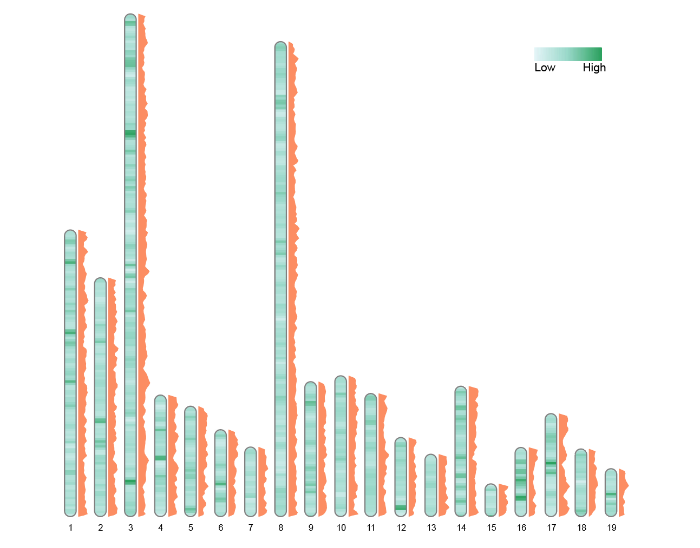
该图以多边形形式展示单一指标的变异情况，面积的变化更显著地体现了值的大小，适合用于强调局部显著区域。
9.5 双多边形标签
# 双多边形标签
data(liriodendron_karyotype, package="RIdeogram")
data(Fst_between_CE_and_CW, package="RIdeogram")
data(Pi_for_CE_and_CW, package="RIdeogram")
ideogram(karyotype = liriodendron_karyotype, overlaid = Fst_between_CE_and_CW, label = Pi_for_CE_and_CW, label_type = "polygon", colorset1 = c("#e5f5f9", "#99d8c9", "#2ca25f"))
convertSVG("chromosome.svg", device = "png")
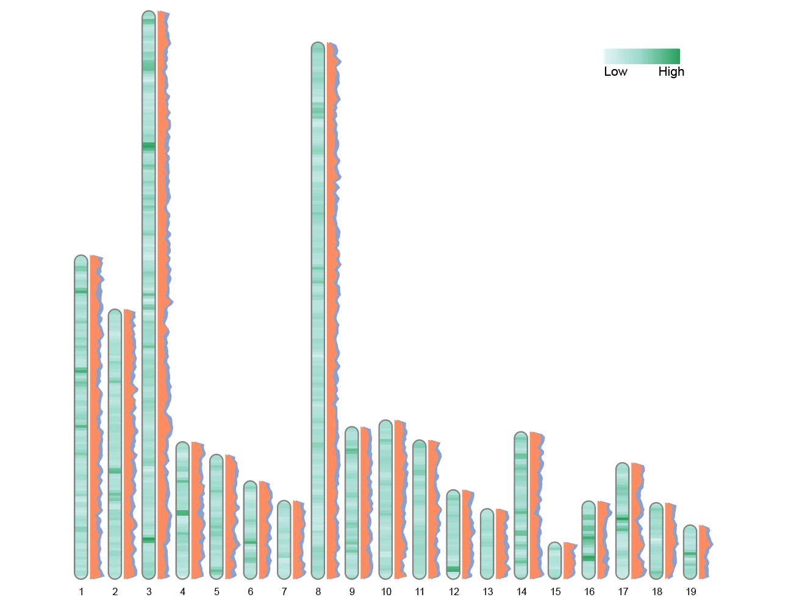
第二个多边形标签会自动横向错开 0.2 染色体宽度，以提升可读性。该图通过两组多边形同时展示两个群体在染色体上的指标差异，重叠区域或间距能够直观比较各区段的数值分布和趋势。
10. 输出不同格式图像文件
除了 png 格式外，也可以用device参数生成其他格式：
convertSVG("chromosome.svg", device = "tiff", dpi = 600)不用device，将 SVG 图像转换为其他格式的快捷函数有：
svg2png("chromosome.svg")
svg2pdf("chromosome.svg")
svg2jpg("chromosome.svg")
svg2tiff("chromosome.svg")应用
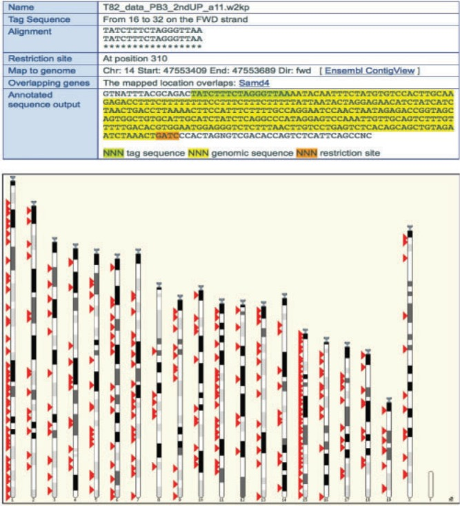
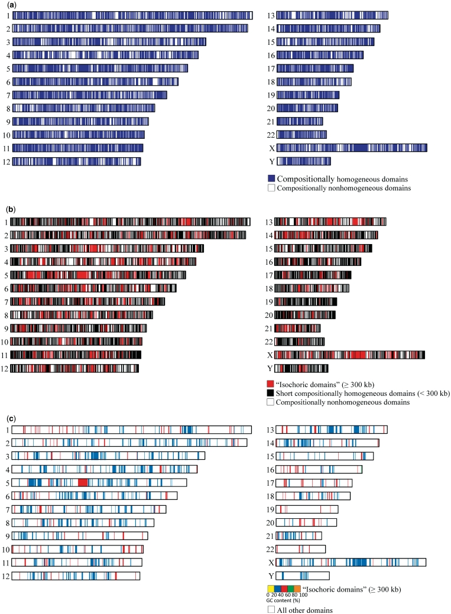
参考资料
[1] RIdeogram: drawing SVG graphics to visualize and map genome-wide data on idiograms https://cran.r-project.org/web/packages/RIdeogram/vignettes/RIdeogram.html [2] Hao Z, Lv D, Ge Y, Shi J, Weijers D, Yu G, Chen J. 2020. RIdeogram: drawing SVG graphics to visualize and map genome-wide data on the idiograms. PeerJ Comput. Sci. 6:e251 http://doi.org/10.7717/peerj-cs.251